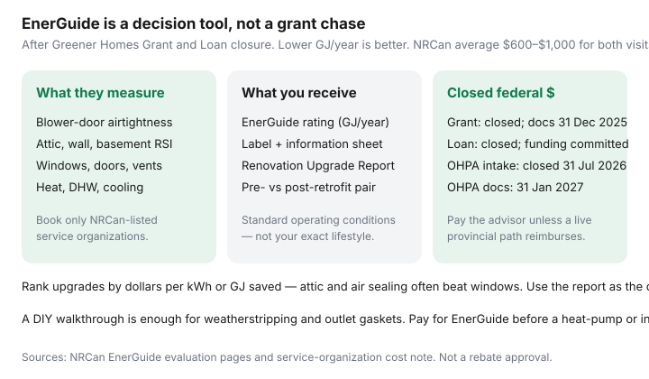

Utilities · Canada
EnerGuide home evaluation in Canada: what it includes, costs, and how to use the report
Households skipped energy audits when a federal grant paid part of the invoice, then treated the PDF as shelfware when the grant closed. An EnerGuide evaluation is still a decision tool: a blower door, a GJ/year rating, and a renovation list you can hand to contractors. It is not a 2023 “how to collect $5,000” walkthrough.
Book only NRCan-listed service organizations. Door-to-door “free audit” pitches are a red flag. After you have the report, rank work with attic guidance and heat pump vs furnace.
Disclosure: Heat-pump quote tools and home energy monitors are offer types. Saving Optimizer may earn a commission if we later add partner links. We do not currently claim advisor, NRCan, or contractor partnerships. This is education — not an EnerGuide booking or rebate approval.
Key takeaways
- A registered energy advisor measures the house, runs a blower-door airtightness test, and models an EnerGuide rating in GJ per year (lower is better) under standard operating conditions — not your exact lifestyle.
- You should receive a label, a Homeowner Information Sheet, and a Renovation Upgrade Report. Pre- and post-retrofit visits are how you prove a change.
- NRCan’s public cost note: about $600–$1,000 for pre- plus post-retrofit evaluations, paid up front, varying by province and house size. The old up-to-$600 federal contribution travelled with a closed grant process.
- Greener Homes Grant is closed (existing-file documents by 31 Dec 2025). Loan applications are closed and funding is committed. OHPA intake closed 31 Jul 2026. Pay the advisor unless a live provincial path reimburses.
- Rank upgrades by dollars per kWh or GJ saved. Use the report as the quote sheet. A DIY walkthrough is enough for gaskets; pay for EnerGuide before a heat-pump or insulation contract you cannot undo.
What a registered energy advisor measures (blower door, etc.)
NRCan’s EnerGuide evaluation for existing homes is a basement-to-attic data collection, then a model. Typical measurements:
- Blower door — a fan in an exterior doorway depressurizes the house so the advisor can quantify leakage and feel the bypasses (attic hatch, rim joist, pot lights).
- Insulation levels in attics, walls, and basement — often inferred where cavities are closed.
- Windows, doors, and ventilation equipment.
- Heating, cooling, and water-heating make, model, fuel, and age.
- Geometry of the house for the simulation.
For the blower door, windows and doors must be in place and closed. Fuel-fired equipment is turned down so it does not fire during the test — a safety issue, not a suggestion. The advisor restores settings. You need standard AC power. If the envelope is mid-reno and open, they may not be able to rate the house.
Find the service organization in NRCan’s directory. They send a registered energy advisor. You contact them; they do not legally cold-call as “NRCan.”

Pre- vs post-retrofit evaluations and label scores
A pre-retrofit visit is the baseline: rating, label, information sheet, upgrade report. A post-retrofit visit is how you prove the work changed the model — and how older grant files documented a claim. You can still buy a single evaluation as a planning tool if you are not chasing a program that requires the pair.
The modern label is a GJ per year estimate of net energy use under standard operating conditions (thermostat, occupants, hot water). Lower is better. The sheet compares you to a regional benchmark and breaks out heating vs other end uses. It is not your exact Visa bill. If you keep the house at 23°C and work from home, your bills will exceed the model. That is expected.
Reports can take a couple of weeks. If you are using the PDF to collect contractor quotes, build that lag into the calendar — especially before a heating-season install.
Typical out-of-pocket cost reality after grant closures
NRCan’s service-organization page (used 20 Sep 2026) says the pre- plus post-retrofit pair may range between $600 and $1,000 on average, paid after the service, varying by provider, province, and house. Individual pre-retrofit quotes in the $400–$700 band appear in provincial markets; treat those as market chatter, not an official fee schedule.
| Program | Status at draft | What it means for the audit |
|---|---|---|
| Greener Homes Grant | Closed; 31 Dec 2025 last document day for existing applicants | The old up-to-$600 evaluation contribution was part of a completed grant process, not a walk-in coupon |
| Greener Homes Loan | Closed; funding fully committed; last apply day 1 Oct 2025 | Do not budget a federal loan against the advisor invoice |
| OHPA | Intake closed 31 Jul 2026; documents 31 Jan 2027; program files through 31 Mar 2027 | A home energy evaluation was not always required; new applications are not a path |
| Provincial / utility | Live stacks change (e.g. some Better Homes or Save on Energy paths) | Ask the service organization which current program, if any, reimburses |
Canada Greener Homes Affordability Program is a separate low-to-median-income retrofit path delivered with provinces — not a DIY grant you apply for beside an EnerGuide PDF. Check the current NRCan pointer; do not invent an amount.
How to prioritize recommendations by $/kWh saved
The upgrade report is a menu, not a shopping list you must finish. For each line, ask the advisor (or your own bill) for a rough kWh or GJ savings, then divide your quote by that savings:
- Air sealing and attic insulation usually win on $/kWh. They also make every heating system look better — see attic R-values.
- A heat pump can win on operating cost and lose on payback if the envelope is unfinished. Convert fuels in gas vs electric.
- Windows are last unless they are failed, unsafe, or you are already opening the wall.
- Solar on a leaky house is a generator for the neighbourhood.
Ignore “this will pay back in two years” from a contractor who has not seen the EnerGuide file. Hand them the PDF and ask them to price the named assembly (RSI target, area, air-sealing scope).
Using the report for contractor quotes and rebate paperwork
Send the same pages to every bidder: the upgrade list, the insulation table, and the mechanical summary. Ask for a quote that maps to those lines, not a generic “spray foam the basement.” If a live provincial rebate still needs an EnerGuide file number, the service organization tells you how the file is identified — you do not invent a number from a blog.
Keep the PDF with the house file (status certificate, furnace invoice, panel photo). The next owner, and the next you, will thank you. A monitor that tracks kWh after the work is how you check the model against the Visa bill; it is an offer type, not a requirement.
When a DIY walkthrough is enough vs when to pay for EnerGuide
DIY is enough for weatherstripping, door sweeps, outlet gaskets, a $15 furnace filter, LED lamps, and a thermostat you will actually program. The winter energy overview covers that week of work.
Pay for EnerGuide before you sign a heat-pump, window, or insulation contract over a few thousand dollars; before you argue with a contractor about “the house doesn’t need air sealing”; or before you apply to a program that still names EnerGuide as a step. An evaluation is a poor purchase if you already know the attic is empty and you will only add cellulose this Saturday — unless you want the rating for a listing or a future program.
If two service organizations quote $450 and $1,100 for the same detached house, ask what is included (infrared, extra visit, travel). The $1,100 quote is not automatically the honest one. The $450 quote is not automatically a steal.
Sources & date stamps
- NRCan, EnerGuide energy-efficiency home evaluations — blower door, data collected, safety around fuel-fired equipment (used 20 Sep 2026).
- NRCan, After your EnerGuide home evaluation — GJ/year rating, label, information sheet, upgrade report; standard operating conditions.
- NRCan, Find service organizations — typical $600–$1,000 for pre- plus post-retrofit evaluations; no door-to-door sales.
- NRCan, Greener Homes Grant process — closed; up-to-$600 evaluation contribution was tied to a completed grant file.
- NRCan, Greener Homes Loan — closed, funding committed (page dated 17 Apr 2026).
- NRCan, OHPA — intake closed 31 Jul 2026; documents 31 Jan 2027; evaluation not always required.
Frequently asked questions
Is EnerGuide still worth it if Greener Homes is closed?
Yes, as a decision tool — if you will use the report to rank work or to collect comparable quotes. It is not worth it if you wanted a federal cheque that no longer exists. Ask whether a live provincial path still reimburses.
How much does an evaluation cost now?
NRCan’s public note is about $600–$1,000 for pre- plus post-retrofit visits, varying by province and house. Get two quotes from listed service organizations. There is no official national sticker price.
Does the rating match my hydro bill?
Not exactly. The model uses standard operating conditions so houses can be compared. Your 23°C setpoint and work-from-home kettle are on the bill, not always in the rating.
Can I skip the blower door?
Not if you want an EnerGuide rating. Airtightness is part of the method. DIY infrared videos are not a substitute.
Do I need a post-retrofit visit?
Only if a program requires it or you want a new label after the work. A single pre-retrofit visit is enough to plan. Do not pay for a post visit you will never book.